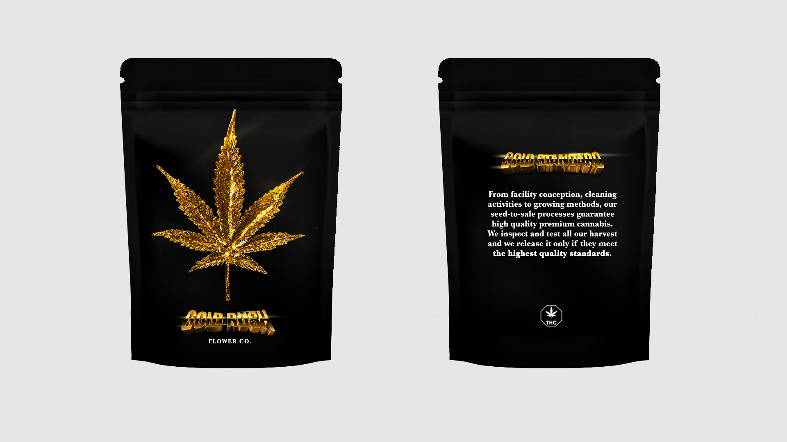
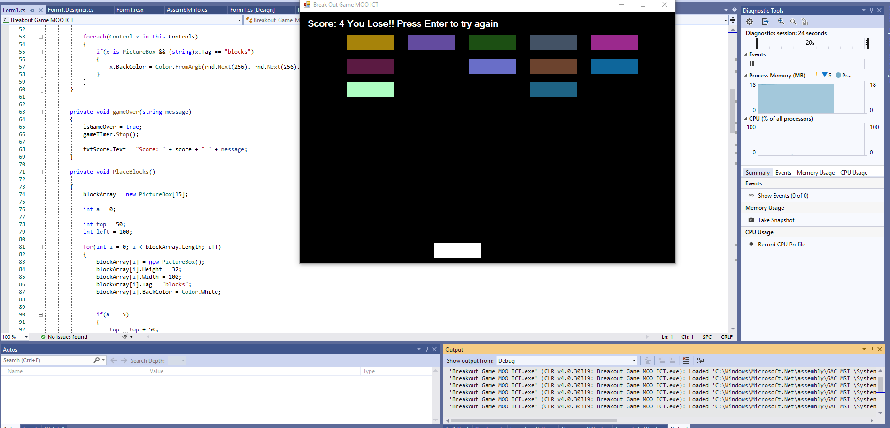
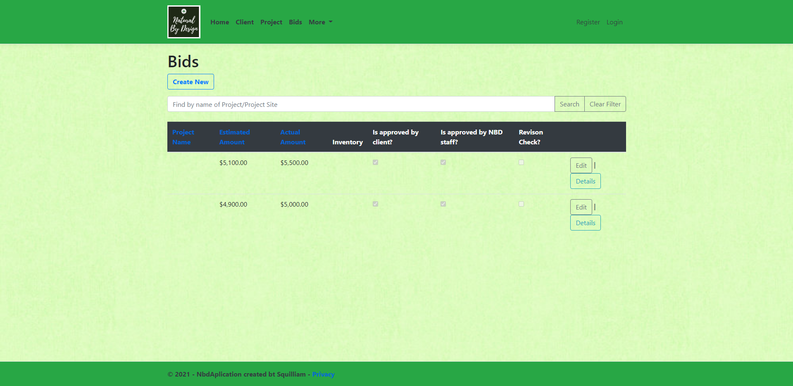

Personal Bio
I am currently a database analyst at Abatement Technologies where I maintain, update and implement new strategies to ensure precise and efficient performance from the company’s database. I was initially brought on board for a co-op placement where I developed a company intranet using the WordPress Platform. Prior to Abatement Technologies, I worked on the design team at Moon Base creating projects in Photoshop and Premier Pro.
Currently I am in my final semester of the computer programmer analyst program at Niagara College. After completing an undergraduate degree in Biological Sciences, I was unhappy in my field and began teaching myself C#, Java, Photoshop and Adobe Premier. The past two years at Niagara College, I further expanded my existing coding skills and became proficient in new languages; SQL, Python and HTML.
When I do have free time to leave my computer desk, I am an avid gym goer and like to play basketball and lift weights to maintain a healthy lifestyle.
Job Experience
Database Analyst - Abatement Technologies (2020-Present)
- Developed company intranet using Wordpress platform
- Created numerous modules using the Epicor system to automate manufacturing logisitcs
- Update, maintain the company database in SQL Server
- Took in raw data and then analyzed it to create easy to read tables, graphs and charts using PowerBI and Excel
- Implemented new software and hardware into company wide servers
- General IT tasks: maintain company Zoom account, Google Admin console, hardware/software repairs
Designer - Moonbase (2017-Present)
- Created brand assets for clients using Photoshop
- Assisted in creating company site along with maintaining and updating
- Lead day-to-day management of social media/marketing campaigns for the company and clients
- Currently working on mobile app for company portfolio
- Created and edited videos for the company and clients using Adobe Premier Pro
Languages and Software
- C#/C++
- Javascript
- ReactJS
- SQL/T-SQL
- Python
- HTML5
- CSS
- Adobe Photoshop and Premier
- SQL Server
- Android Development Studio
- WordPress
- Epicor
- Microsoft Suite: Excel, ServerManagment, PowerBI
Project Portfolio
Abatement Intranet
Created company intranet using WordPress and custom PHP,CSS and HTML code.
Met with leads from each department to determine requirments for each page
Packaging Design
Developed multiple packaging designs in photoshop for a cannabis company located in Detroit, Michigan. Met with clients to determine requirments before they ultimately chose the one below.
Brick Breaker Game
As an avid gamer, I've always been intrigued by the game creation process. The brick breaker game was a passion project that included custom collision detecting code created in Visual Studio with C# code.
School Group Project
This was a project that spammed the length of a semester. I worked with other students to create an MVC application using C#, HTML, CSS and Java. The application was made for a design company and contain features such as: creating and estimating bids, calculating totals, storing customer information and creating/editing projects with tasks
